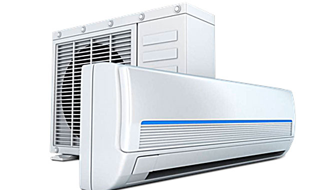

Climatizacion
Los electrodomésticos de climatización son dispositivos diseñados para controlar la temperatura y la calidad del aire en espacios interiores, proporcionando confort térmico y bienestar a los ocupantes del hogar u oficina. Estos electrodomésticos de climatización son fundamentales para crear un ambiente interior cómodo y saludable en el hogar u oficina, especialmente en regiones con climas extremos donde las temperaturas pueden variar significativamente a lo largo del año.
